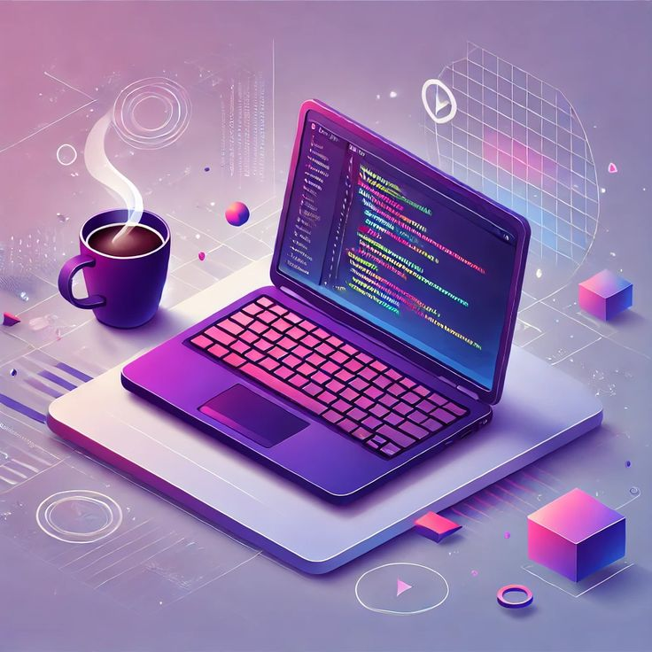
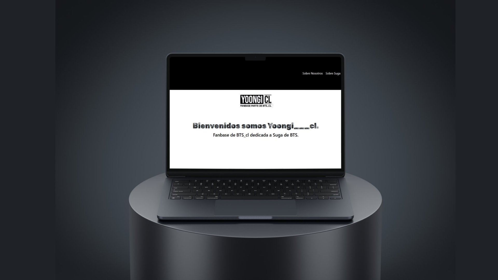
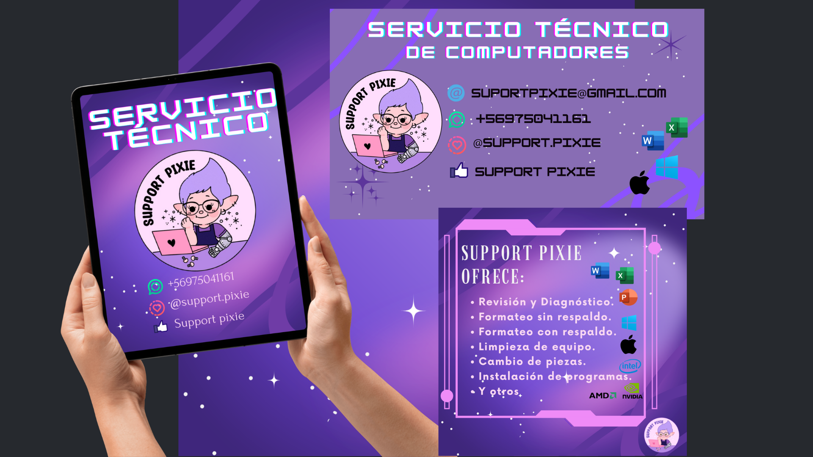
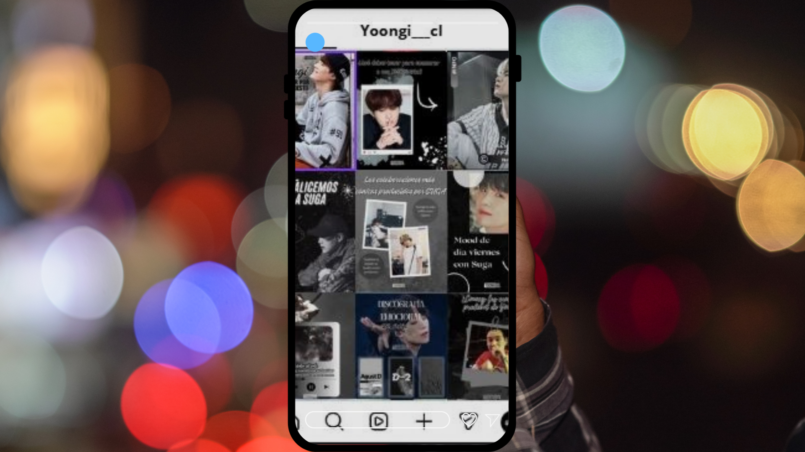
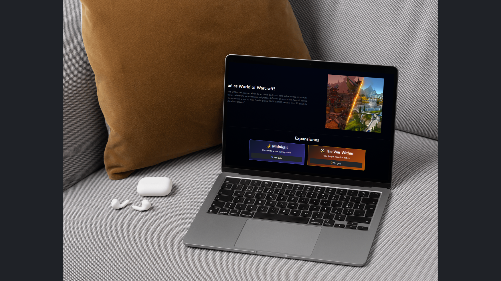

Desarrollo web
Me interesa crear sitios web funcionales, accesibles y adaptables a distintos dispositivos.
¡Hola! Bienvenida a mi espacio creativo
Creo experiencias digitales que combinan tecnología, funcionalidad y diseño.
Conoce más
Soy ingeniera en informática con interés en el desarrollo web y el diseño digital. Me gusta combinar tecnología y creatividad para crear experiencias digitales funcionales, intuitivas y visualmente atractivas.
Disfruto aprender nuevas herramientas, explorar ideas y cuidar los detalles de cada proyecto. Mi objetivo es seguir creciendo profesionalmente y desarrollar soluciones digitales que sean útiles y agradables para las personas.
Me interesa crear sitios web funcionales, accesibles y adaptables a distintos dispositivos.
Disfruto explorar colores, tipografías e ideas visuales para dar personalidad a cada proyecto.
Una selección de proyectos donde combino tecnología, funcionalidad y creatividad.

Diseño y desarrollo de un sitio web utilizando HTML, CSS y Bootstrap.
Ver proyecto
Desarrollo de una identidad visual para un servicio técnico personal.
Próximamente
Diseño de publicaciones para cuenta de fans en instagram, para representar mi identidad creativa y profesional.
Próximamente
Proyecto web con contenido y recursos para quienes comienzan a jugar World of Warcraft.
En desarrolloMi trayectoria combina desarrollo web, diseño digital y creación de contenido, a través de proyectos personales y colaboraciones creativas.
He desarrollado sitios web utilizando HTML, CSS y Bootstrap, llevando uno de mis proyectos hasta su publicación en internet. Actualmente, también trabajo en una web de recursos para nuevos jugadores de World of Warcraft.
Proyectos personalesHe creado logos e identidades visuales para proyectos propios y de otras personas, explorando la combinación de colores, tipografías y elementos gráficos.
Diseño independienteHe diseñado publicaciones para una cuenta fan de Instagram, creando piezas gráficas para compartir contenido con una comunidad digital.
Diseño para redes sociales¿Tienes una idea, un proyecto o simplemente quieres ponerte en contacto conmigo? ¡Me encantará leerte!